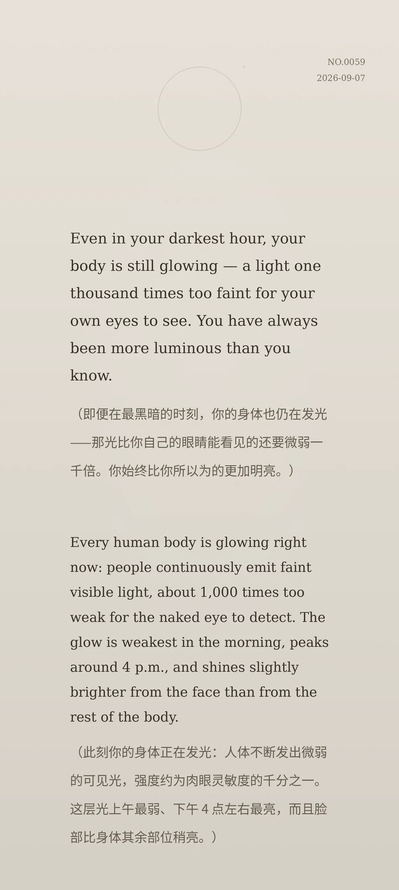

Even in your darkest hour, your body is still glowing — a light one thousand times too faint for your own eyes to see. You have always been more luminous than you know. （即便在最黑暗的时刻，你的身体也仍在发光——那光比你自己的眼睛能看见的还要微弱一千倍。你始终比你所以为的更加明亮。）
Every human body is glowing right now: people continuously emit faint visible light, about 1,000 times too weak for the naked eye to detect. The glow is weakest in the morning, peaks around 4 p.m., and shines slightly brighter from the face than from the rest of the body. （此刻你的身体正在发光：人体不断发出微弱的可见光，强度约为肉眼灵敏度的千分之一。这层光上午最弱、下午 4 点左右最亮，而且脸部比身体其余部位稍亮。）
a26a7955944dc5c60445bff77fac9c8e0559aab02155ccca冷知识由执笔的模型自行查证。逐条断言、来源与所引原句存档在纯文字副本里，未经程序逐字校验，留作事后核实。